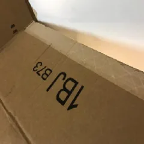
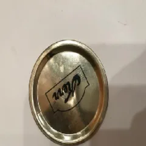
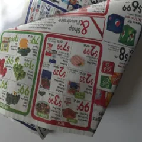
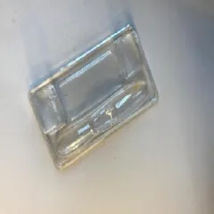

F1 score by class · 508 validation images
Computer vision · TensorFlow
Trash classification with transfer learning
A frozen MobileNet backbone with a new classification head, trained with heavy augmentation, learning-rate scheduling, and early stopping. The weakest class is "trash", which has the fewest examples (137 of 2,527).
TensorFlowMobileNetAugmentation
85% validation accuracy · macro F1 0.84GitHub ↗